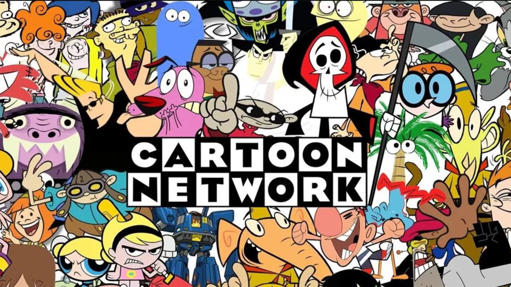

Cartoon Network
Cartoon Network é um canal norte-americano de televisão por assinatura de rede de propriedade da Warner Bros.
Discovery Networks, de propriedade da Warner Bros. Discovery, que vai ao ar principalmente com programação animada.
O canal foi lançado em 1 de outubro de 1992, depois que Turner comprou o estúdio de animação com desenhos de Hanna-Barbera em 1991.
Foi servido como uma tomada de 24 horas para as propriedades de animação clássicos das bibliotecas Turner Broadcasting.
O canal também transmite uma variedade de programas, que vão de animações com ação à comédia.
As séries originais começaram em 1992 com Space Ghost Costa a Costa, juntamente com desenhos animados como Cow and Chicken, Dexter's Laboratory,
The Powerpuff Girls, Johnny Bravo, Ed, Edd n Eddy, Coragem, o Cão Covarde, Tom e Jerry, Looney Tunes, Pet Alien e Pecola.
Eles faziam parte de Desenhos Incríveis - O Show.
Desenho mais assistido: O Incrível Mundo de Gumball

O Incrível Mundo de Gumball acompanha o gato azul Gumball Watterson, de 12 anos, e sua família em suas aventuras e confusões na cidade de Elmore.
Sempre acompanhado de seu irmão Darwin, eles navegam as brincadeiras e dilemas da pré-adolescência em uma cidade repleta de criaturas peculiares.